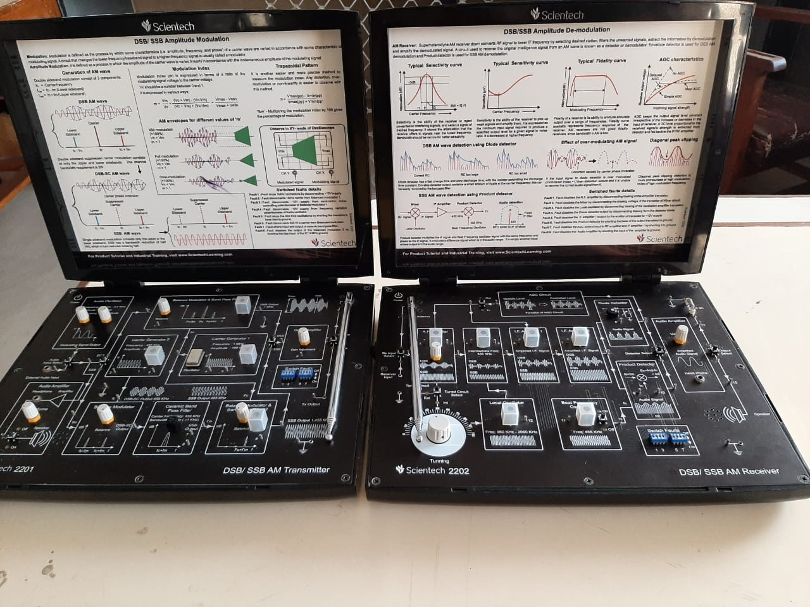

Basic Electronics Lab
This laboratory is intended for performing laboratory exercises for subjects like Basic of Electronics Engineering (BEC), Workshop Practice (WP) and Branch Specific-II (EDC) of the First year and Linear Electronics of the second year students. It is well equipped with the sufficient numbers of Digital storage oscilloscopes, Function Generators, Power Supplies, cathode-ray oscilloscope, Digital Multi-meters, Component Development System Trainers, Universal IC Tester, Soldering Stations, etc.

Digital Electronics Lab
The laboratory is located on 3rd floor of ECED (New Building) and has total build up area of 1500 sq. ft. This laboratory is intended for performing laboratory exercises for subjects like Digital Electronics, Digital Logic Design and Digital Integrated Circuts. It is equipped with Digital Electronics Trainer Boards, CPLD kits, Microprocessor kits, DSOs and Universal IC Testers. It has support for doing UG/PG projects based on Microprocessors and CPLD kits. Digital Laboratory is also equipped with add on modules such as ADC, Counters, Keyboard encoders and Microprocessor peripheral cards.
Basic Communication Lab
This laboratory is dedicated for learning the practical aspects of subject related to Communication Engineering. Earlier the laboratory of subjects like RF & Microwave Communication, Optical Communication were also conducted along with Analog & Digital Communication. Since 2016, the laboratory was renamed to Basic Communication Lab and has been more focused for core Communication Engineering subjects. The communication Systems Laboratory intends to cover the basic understanding of functionalities of various block-sets involved in communication system. It involves system design and simulation exercises using software like MATLAB/Sci Lab, Simulink and experiments based on HW boards. Students are introduced to the functioning of modern communication systems and their performance in the presence of noise.

- This Laboratory is useful to understand the basic theories of Communication system. They are basically Analog Communication, Digital Communication, Wireless Communication/ Advanced Communication.
- Analog Communication trainers like DSB/SSB transmitter/ receiver, FM modulator/demodulator, FDM trainer etc., are available to understand the fundamentals.
- Students can also be aware of the concepts of Digital Communication using various trainer boards as well as simulation.
- It is also equipped with trainers such as Mobile phone trainer ,CDMA system, GSM etc.